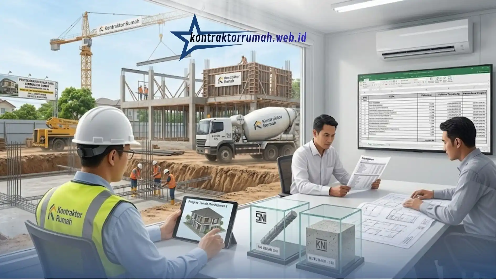

SOP Bangun Rumah Baru dari Nol: Struktur Kuat, Bebas Bengkak Anggaran
 Anggun Tri Stya
|
22 Agustus 2026
|
Waktu baca: 7 Menit
Anggun Tri Stya
|
22 Agustus 2026
|
Waktu baca: 7 Menit

Membangun rumah baru yang kuat dan kokoh memerlukan Standar Operasional Prosedur (SOP) pengerjaan yang ketat, mulai dari survei kelayakan tanah, pembuatan pondasi cakar ayam standar sipil, hingga pengecoran beton bertulang berstandar SNI. Kontraktor Rumah (kontraktorrumah.web.id) hadir menyediakan jasa bangun rumah terpercaya di Jabodetabek dengan sistem kerja transparan, terukur, dan bebas bengkak anggaran.
Banyak pemilik lahan yang akhirnya kecewa karena membangun rumah tanpa SOP yang jelas — hasilnya struktur retak, biaya membengkak, dan pengerjaan molor dari jadwal.
Ringkasan Inti
- SOP bangun rumah terdiri dari 4 tahapan inti: perencanaan, RAB, struktur bawah, dan struktur atas & finishing
- RAB disusun rinci per item pekerjaan agar tidak ada biaya tersembunyi di tengah proyek
- Jenis pondasi disesuaikan hasil uji tanah: cakar ayam untuk tanah stabil, bored pile untuk daya dukung rendah
- Seluruh pengecoran beton bertulang mengacu Standar Nasional Indonesia (SNI)
- Bengkak anggaran umumnya dipicu perencanaan kurang matang atau perubahan desain di tengah jalan
Daftar Isi
1. Perencanaan Arsitektur & Desain Gambar 3D
Setiap proyek konstruksi hunian idealnya mengikuti empat tahapan inti agar struktur bangunan kuat dan anggaran tetap terkendali. Tahap awal dimulai dengan survei lokasi untuk memastikan kondisi tanah, batas lahan, dan orientasi bangunan terhadap arah matahari. Hasil survei ini menjadi dasar penyusunan gambar kerja (denah, tampak, potongan) serta visualisasi 3D yang memudahkan klien membayangkan hasil akhir sebelum konstruksi dimulai.
Pada tahap ini, tim arsitek juga menyesuaikan desain dengan Koefisien Dasar Bangunan (KDB) dan Koefisien Lantai Bangunan (KLB) yang berlaku di wilayah setempat agar bangunan sesuai izin.
2. Perhitungan Rencana Anggaran Biaya (RAB) Transparan
RAB disusun secara rinci per item pekerjaan — mulai dari pekerjaan tanah, struktur, arsitektur, hingga mekanikal elektrikal — lengkap dengan volume dan harga satuan yang mengacu pada harga material terkini.
Transparansi RAB ini penting agar klien mengetahui alokasi dana secara pasti sejak awal, sehingga tidak ada biaya tersembunyi yang muncul di tengah proses pengerjaan. Kontraktor Rumah selalu membagikan rincian RAB dalam bentuk dokumen tertulis sebelum kontrak kerja ditandatangani.

3. Pekerjaan Struktur Bawah (Pondasi Bored Pile/Cakar Ayam)
Struktur bawah adalah penopang utama seluruh beban bangunan, sehingga pemilihan jenis pondasi harus disesuaikan dengan hasil uji tanah.
- Pondasi bored pile umumnya lebih direkomendasikan untuk tanah berdaya dukung rendah atau lahan berkontur, karena mampu menembus lapisan tanah keras di kedalaman tertentu
- Pondasi cakar ayam (foot plat) lazim digunakan pada tanah dengan daya dukung stabil untuk bangunan satu hingga dua lantai
- Seluruh proses pengecoran beton bertulang mengacu pada Standar Nasional Indonesia (SNI) terkait mutu beton dan diameter besi tulangan, agar struktur tidak retak atau ambles di kemudian hari
4. Pekerjaan Struktur Atas & Finishing Presisi
Setelah struktur bawah selesai dan cukup umur beton, pekerjaan berlanjut ke struktur atas: kolom, balok, ring balok, hingga rangka atap. Setiap tahap dikerjakan dengan pengawasan mutu berjenjang sebelum lanjut ke tahap berikutnya.
Bagian finishing — plesteran, pengecatan, pemasangan keramik, sanitasi, hingga instalasi listrik — dikerjakan dengan presisi tinggi agar hasil akhir rapi dan sesuai gambar kerja, sekaligus meminimalkan risiko pekerjaan ulang yang berpotensi menambah biaya.
5. Mengapa Memilih Jasa Bangun Rumah Kontraktor Rumah?
Memilih penyedia jasa bangun rumah yang tepat menentukan hasil akhir dan ketenangan pikiran selama proses konstruksi berlangsung. Kontraktor Rumah membangun kepercayaan klien melalui beberapa keunggulan berikut:
- SOP kerja yang terstandarisasi — setiap tahapan, dari survei hingga serah terima, didokumentasikan dan diawasi tim teknis berpengalaman
- RAB transparan tanpa biaya siluman — klien mengetahui rincian anggaran sejak kontrak awal, sehingga tidak ada kejutan biaya di tengah jalan
- Standar struktur mengacu SNI — mutu beton, besi tulangan, dan metode pengecoran diawasi ketat untuk memastikan bangunan kokoh dan tahan lama
- Jangkauan layanan Jabodetabek — tim siap menangani proyek di Jakarta, Bogor, Depok, Tangerang, dan Bekasi dengan waktu respons cepat
- Konsultasi mudah dijangkau — calon klien dapat berkonsultasi langsung dengan tim teknis melalui WhatsApp untuk membahas kebutuhan proyek sebelum kontrak berjalan
Kombinasi SOP yang ketat dan transparansi anggaran inilah yang membedakan Kontraktor Rumah dari penyedia jasa konstruksi konvensional yang sering kali minim dokumentasi dan pengawasan mutu.
6. Tips Mencegah Bengkak Anggaran saat Bangun Rumah
Bengkak anggaran hampir selalu bersumber dari perencanaan yang kurang matang atau perubahan desain di tengah pengerjaan. Berikut beberapa langkah praktis yang bisa diterapkan pemilik rumah:
- Finalisasi desain sebelum konstruksi dimulai — perubahan denah atau spesifikasi material saat pekerjaan sudah berjalan hampir selalu menambah biaya bongkar-pasang
- Gunakan RAB sebagai acuan pengeluaran, bukan sekadar estimasi — pantau realisasi anggaran secara berkala dan bandingkan dengan RAB awal
- Pilih material sesuai spesifikasi teknis, bukan hanya harga termurah — material berkualitas rendah cenderung memicu biaya perbaikan berulang
- Sepakati sistem pembayaran bertahap sesuai progres fisik pekerjaan untuk melindungi klien sekaligus menjaga arus kerja kontraktor tetap lancar
- Libatkan pengawas independen atau tim internal kontraktor untuk memverifikasi progres sebelum pencairan termin berikutnya
Menerapkan SOP yang disiplin sejak tahap perencanaan hingga finishing adalah kunci utama mendapatkan rumah dengan struktur kuat tanpa harus mengorbankan anggaran. Bagi Anda yang berencana membangun rumah di kawasan Jabodetabek, tim jasa bangun rumah Kontraktor Rumah siap membantu mulai dari konsultasi desain, penyusunan RAB, hingga pengerjaan struktur dan finishing.